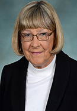

Mike Mercurio
Chief Executive Officer
Catherine Smiley Jones
Chief Operations Officer
|
|
Mike Mercurio
Chief Executive Officer |
Catherine Smiley Jones
Chief Operations Officer |
|  | |
Betty Graner
Executive Assistant |
Susanne Torre
Executive Assistant |
If you are interested in volunteering for SDAR, download this form . Please contact the staff liaison for current information about a specific committee. For a list of Directors, Click here
download this form . Please contact the staff liaison for current information about a specific committee. For a list of Directors, Click here  .
.
|
{mooblock=Board of Directors} SDAR's elected leadership and decision-making body. {/mooblock} {mooblock=Bylaws Committee} Reviews SDAR bylaws to keep current with California Corporation law, as well as approved national, state and association policy and procedures. {/mooblock} |
{mooblock=Executive Committee}
Serves as an advisory body to the President, EVP and Board of Directors. Composed of officers and appointments of the President.
Staff Liaison: Michael Mercurio
Linda Lee, President
Leslie Kilpatrick, President-Elect
Chris Anderson, Vice President
Glenn Bennett, Treasurer
Donna Sanfilippo, IPP
Bob Kevane, IPP
Angela Ordway
Ken Tablang
{/mooblock}
{mooblock=Leadership Advancement & Development}
{/mooblock}
{mooblock=Nominating/Election Committee}
Committee oversees the annual and special elections of SDAR. Reviews and confirms eligibility, interviews candidates to confirm qualifications, and reports members qualified to serve as officers and directors to the Board of Directors. Members are appointed by the President.
Staff Liaison: Betty Graner
Cory Shepard, Chair
Karla Cohn
Robert Kevane
Marjorie McLaughlin
Fiona Theseira
Erik Weichelt
Brian Westre
Donna Sanfilippo
Linda Lee, ex-officio
{/mooblock}
{mooblock=Strategic Planning Committee}
Committee of appointed members who develop the strategic goals for the association.
Staff Liaison: Michael Mercurio
{/mooblock}